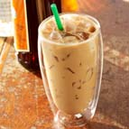
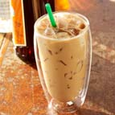

INTRODUCTION
Starbucks was founded by Jerry Baldwin, Gordon Bowker, and Zev Siegl, opening its first store in 1971 near the historic Pike Place Market in Seattle. The three Starbucks founders had two things in common; they were all coming from academia, and they all loved coffee and tea. They invested and borrowed some money to open the first store in Seattle and named it “Starbucks” after the first mate in Herman Melville’s classic novel Moby Dick. Alfred Peet, a coffee-roasting entrepreneur, was a major inspiration to the founders of Starbucks. Peet was a Dutch immigrant who had begun importing fine arabica coffees into the United States during the 1950s. In 1966 he opened a small store, Peet’s Coffee and Tea, in Berkeley, California, that specialized in importing first-rate coffees and teas. Peet’s success encouraged the Starbucks founders to base their business model on selling high-quality coffee beans and equipment, and Peet’s became the initial supplier of green coffee beans to Starbucks. The partners then purchased a used roaster from Holland, and Baldwin and Bowker experimented with Alfred Peet’s roasting techniques to create their own blends and flavours. By the early 1980s, Starbucks had opened four stores in Seattle that stood out from the competitors with their top-quality fresh-roasted coffees. In 1980 Siegl decided to pursue other interests and left the two remaining partners, with Baldwin assuming the role of company president. In 1981 Howard Schultz, a sales representative for Hammarplast, a Swedish company that made kitchen equipment and housewares from which Starbucks bought drip-coffee makers, noticed how large the company’s orders were, which prompted him to pay it a visit. Schultz was so impressed that he decided to pursue a career at Starbucks, and he was hired as the head of marketing in 1982. Schultz noticed that first-time customers sometimes felt uneasy in the stores because of their lack of knowledge about fine coffees, so he worked with store employees on developing customer-friendly sales skills and produced brochures that made it easy for customers to learn about the company’s products. Schultz’s biggest idea for the future of Starbucks came during the spring of 1983 when the company sent him to Milan to attend an international housewares show. While in Italy, he was impressed with the country’s cafés, and he thought of doing something similar in Starbucks. However, Baldwin and Bowker were not enthusiastic about Schultz’s idea, as they did not want Starbucks to deviate much from its traditional model of business. They wanted Starbucks to remain strictly a coffee and equipment seller and not turn into a café that served espressos and cappuccinos. Seeing that he would not be able to persuade Baldwin and Bowker to embrace the café idea, Schultz left Starbucks in 1985 and started his own coffee chain called Il Giornale, which was an immediate success, quickly expanding into multiple cities. In March 1987 Baldwin and Bowker decided to sell Starbucks, and Schultz was quick to purchase the company. He combined all his operations under the Starbucks brand and committed to the café concept for the business, with additional sales of beans, equipment, and other items in Starbucks stores. The company entered into a meteoric period of expansion that continued after the company went public in 1992. In 1996 it began opening stores outside North America, and Starbucks soon became the largest coffee-house chain in the world. By the early 21st century, Starbucks had a presence in dozens of countries around the globe and operated over 30,000 stores. It began selling food in its cafés in 2003. Schultz was replaced as CEO by Kevin Johnson in 2016 and as chairman by Myron Ullman in 2018. The world’s largest Starbucks, a Starbucks Reserve Roastery, opened in Chicago in 2019.
BEST SELLERS


 

Click here to pick your drink
RESPONSIBLY CULTIVATED COFFEE
We take an ethical approach to coffee sourcing through responsible purchasing principles, farmer loans and forest conservation programs. Buying coffee this way, we help foster a better future for farmers and a more stable climate for the earth, while also finding a long-term supply of nuts. High-quality coffee that we've carefully blended, roasted and packaged freshly for over forty years. For over a decade, Conservation International has helped us develop purchasing principles that address our ethical sourcing basics. Known as Farmers and Coffee Fair Practices (C.A.F.E.), these principles help farmers grow coffee in a way that is better for both people and the planet. Practices about C.A.F.E. is a complete set of metrological standards, focusing on the following four areas: Product Quality (required): All coffees must meet Starbucks' high quality standards. Economic Accountability (required): Transparency is required. Suppliers must submit proof of payment throughout the coffee supply chain to prove the price Starbucks paid for green (unroasted) coffee purchased from farmers. Social Responsibility (assessed by third-party verifiers): Measures assessed by third-party verifiers are in place to ensure safe, fair and humane working conditions, including protecting workers' rights and providing living conditions. suitable for them. Comply with the requirements of forced labor, child labor and minimum wage requirements. Environmental leadership (assessed by third-party verifiers): Appropriate measures to manage waste, protect water quality, conserve water and energy, conserve biodiversity and minimize the use of agrochemical products. Our target We aim to obtain an independent third party certification or endorsement for 100% of our coffee. Result In fiscal 2011, Starbucks purchased more than 428 million pounds of coffee. 86% of that - 367 million pounds - was purchased from suppliers approved by C.A.F.E Practices. We paid an average price of about US $ 2.38 per pound of green (unroasted) coffee in 2011 - up from $ 1.56 per pound in 2010. We partnered with the Foundation. Conservation International (CI) and conducting analysis of the results in accordance with CAFE Practices to ensure that the impact on the farmer supports the program's goal and that we continually develop the program to meet the needs of the farmers. Conservation International's analysis of farmers' participation in the CAFE Practices shows that, over time, farmers still take care of their children to go to school and preserve them. the rest of the forest remains on their land while the suppliers achieve high performance and enhanced practical capabilities. The program's coverage is vast, spanning 20 countries, affecting more than 1 million workers per year and encouraging responsible measures of more than 102,000 hectares per year. Fair Trade works for a better quality of life Fairtrade coffee allows small-scale coffee farmers to link up into democratic cooperatives, invest in their farms and communities, protect the environment and develop the business skills needed to compete in the global market. Starbucks began purchasing Fairtrade coffee in 2000. Since then, we have paid more than $ 16 million in compensation to Fairtrade (in addition to the green coffee purchase price), which is paid by the producer organizations. Used for social and economic investment activities at the level of communities and organizations. In addition, more than US $ 10 million has been paid to Fairtrade licensing initiatives to support the international certification system (FLO-Cert), manufacturer's services, and build awareness of the benefits of Fairtrade.